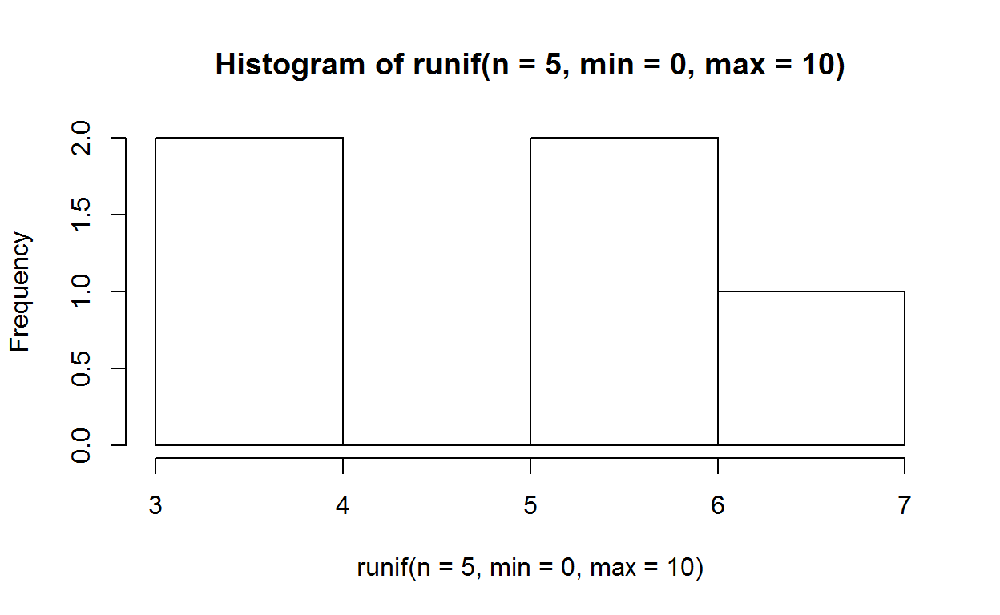
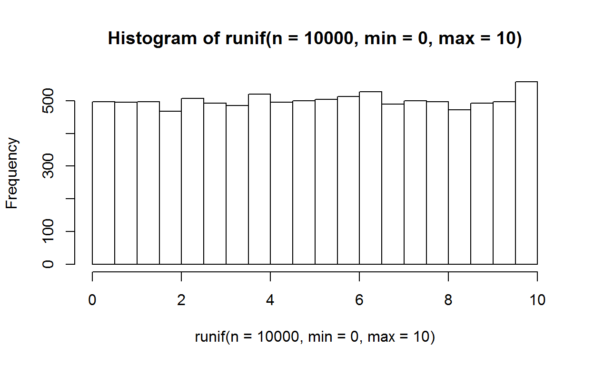
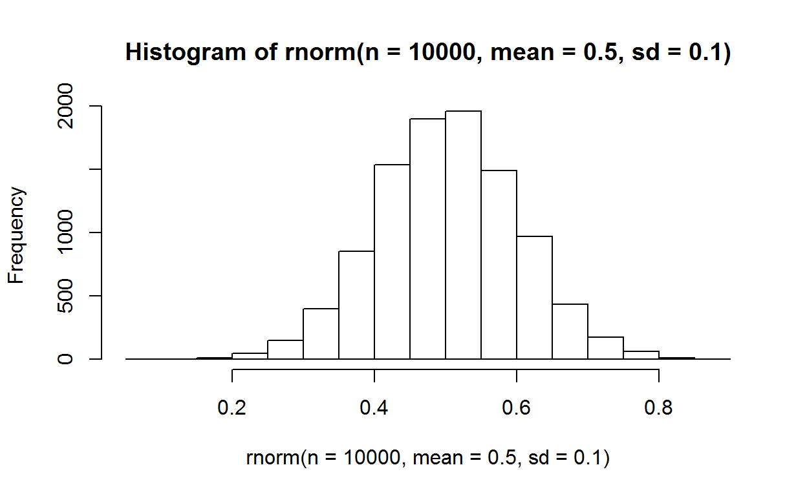
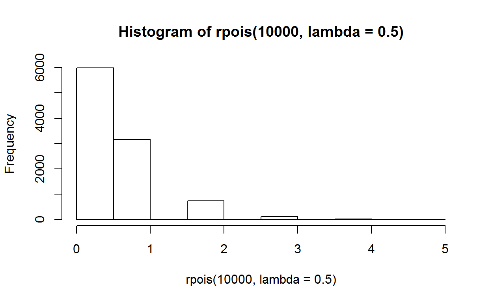
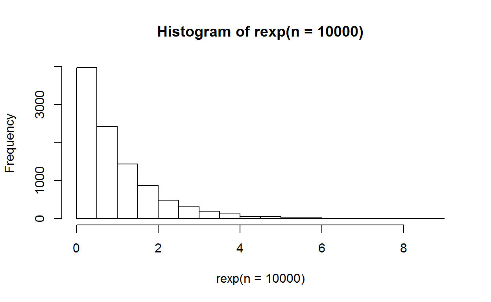
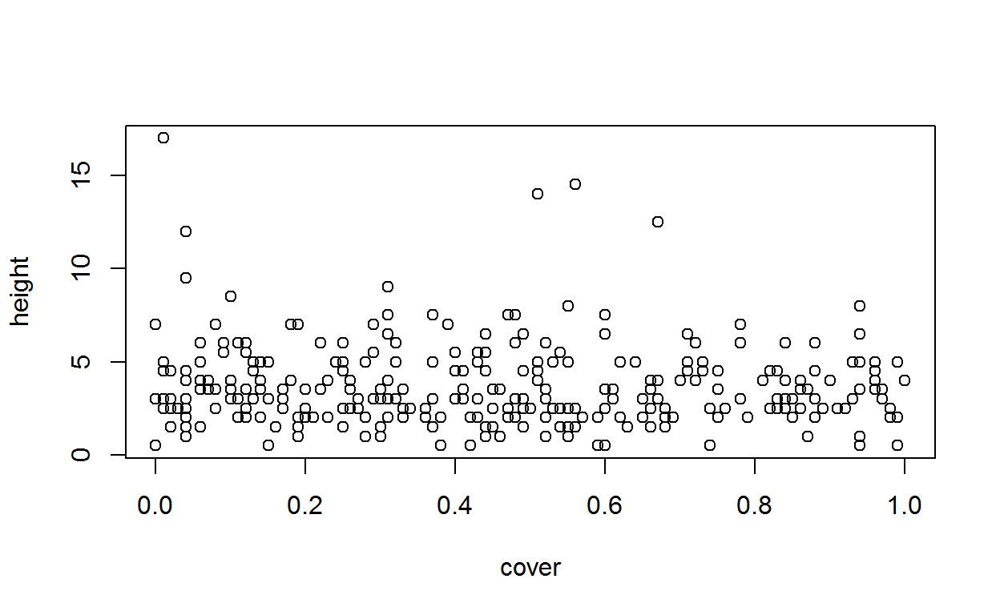
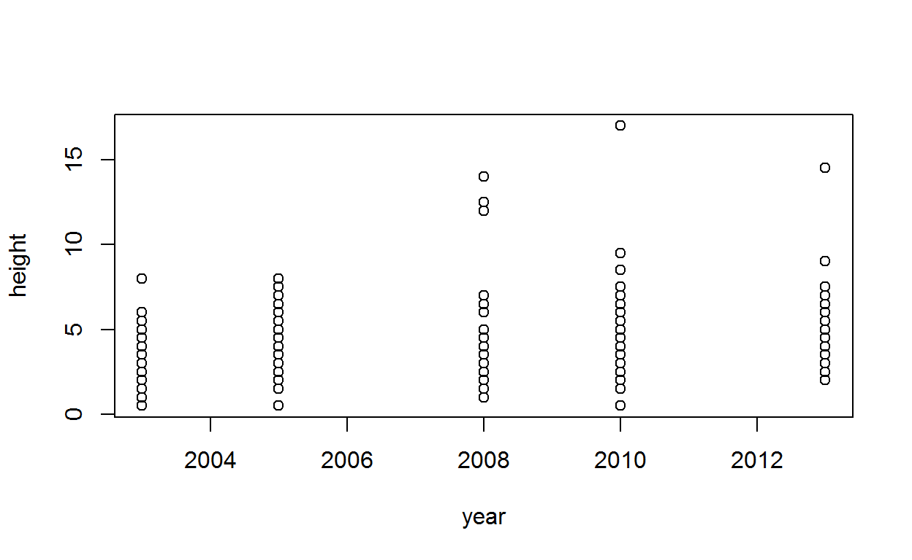
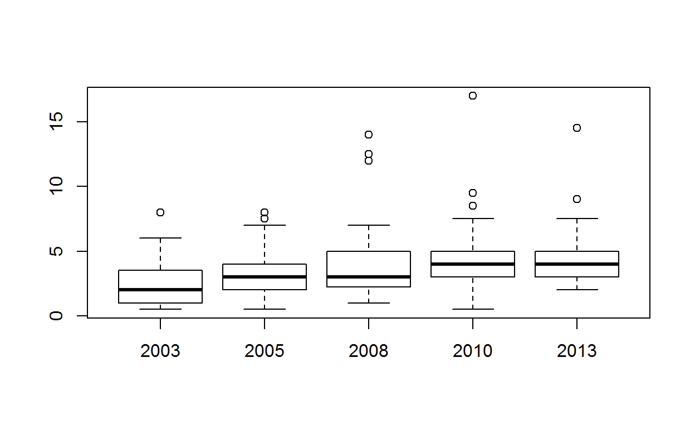
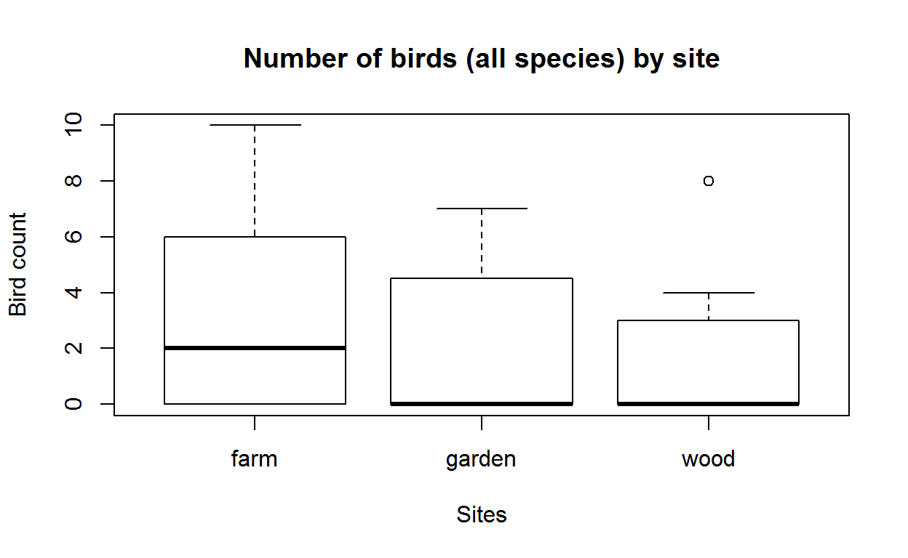

INTRODUCTION
About these tutorials
The Introduction to R Tutorials are a part of a Natural England e-learning course which will help you get to grips with using the R Studio user interface and to understand the syntax and concepts of the R language.
Learning outcomes
After completing the course you should be able to:
- understand the main data types in R: vector, matrix, data frame.
- be able to import data from common file formats
- be able to work with functions and know where to find information on new functions
- be able to manipulate data with mathematical and logical operators
- undertake simple statistical analysis on your data
- make basic graphs
This will give you the grounding to follow the case study examples that are being developed and to apply the techniques to your own data.
Click Continue to read on.
Target audience
The course is suitable for anyone who wants to be able to undertake statistical analysis themselves.
Content
- Tutorial 1: R data types (xx minutes)
- Tutorial 2: Importing data (xx minutes)
- Tutorial 3: Functions and operators (xx minutes)
- Tutorial 4: Summary statistics (xx minutes)
- ?? Running statistical tests (xx minutes)
- ?? Plots and charts (xx minutes)
Click Continue to read on.
Pre-requisites
For the interactive tutorial you will need to use the Google Chrome browser. If you do not already have Chrome on your EDEN 7 laptop then open the Software Centre, select Chrome for Work and click on Install. See the following instructions for more details.
Whilst you may wish to install R and RStudio prior to starting this training course so that you can apply what you have learnt as you go along, having the software installed is not essential to running the interactive tutorials.
You may find it helpful to review more general introductory material about R before you start the tutorials, including the video: Overview of R and R Studio (Duration 1 hour?)
How to use these tutorials
These tutorials are interactive. They include some explanation, but will also ask you to discover how R works by executing R code in exercises, or through quizzes. You will be able to try out your quiz answers before you sumit your solution.
Each tutorial will be progressively revealed: Click Continue or Next topic to move forward. You will get most out of the training if you complete all the exercises.
Understanding code formatting
The tutorials include R code which is always formatted like this: this is what R code looks like or as a separate chunk of code (which looks more like it does in RStudio):
This is what an R code chunk looks like. The output which R generates is presented like this:
## [1] "This is what R output looks like."print("Pirates say R")In R, any text to the right of a hash # is ignored by the R programme. It is used to write comments addressed to the human reading the code.
#This is a comment. R will print it, but ignore it.
#pssst: R is a silly name for a programme. Don't tell R. Click Next topic to start the first tutorial.
Tutorial 1: R DATA TYPES
This session should take about ??? minutes to complete. It introduces the ways in which R handles data and how it handles data, namely:
- Value classes
- Vectors
- Matrices
- Data Frames
- Missing Values
Lets look at value classes first.
Value classes
Any dataset consists of a number of elements (e.g. a measurement, species name, presence/absence), each of which has a value. In R the following types of value can exist:
- Numeric
- Integer
- Complex
- Character
- Logical
- Raw (we won’t address the raw class of data here)
Numeric values
Any value which consists of only numbers is automatically treated as numeric data by R.
water table measurements:
15.4, 15.8, 20, 21
If there are only whole numbers, it will be treated as an integer.
bird counts:
15, 700, 300, 120
Another category is complex numbers (such as 3 + 2i), which won’t be further addressed here. Irrational numbers (such as pi) are simply treated as numeric.
Character values
Any value which contains text is automatically treated as a character. Numbers can also be interpreted as a character, or forced to be treated as characters. You can tell R something is a character by enclosing it in double "char" or single 'char' quotes.
species:
"bellis perennis", "columba livia"
All character values are automatically also categorical.
Logical values
A logical value can only be either TRUE or FALSE. R automatically recognises those two words as logical values, but can also treat other values as logical (e.g. 0 and 1, T and F).
feature present:
TRUE, FALSE, FALSE, TRUE
Quiz
Vector
What are vectors?
Vectors are a sequences of values. The values must all be of the same type.
Vectors can be of the type:
numeric, e.g. 9.2, 33.7, 27.4, 14.9 logical, e.g. TRUE, TRUE, FALSE *character, e.g. mud, sand
Vectors can also be coerced into the class factor
Factors
We have not yet encountered categorical data. Data is categorical if its values belong to a collection of known, defined and non-overlapping classes. In R these are known as factors.
Common examples might be:
- species
- habitats
- survey squares
- etc.
In R Factors have two attributes:
- Levels = the discrete categories; and
- Positions = the category value in each position in the vector.
Making vectors: combining individual values
You can make a vector by combining a sequence of values separated with a comma. The combine function in R is c() and each value must be separated with a comma ,.
Click Run Code to see how it works with each of the main vector types:
Numeric vector:
c(9.2, 33.7, 27.4, 14.9) Logical vector:
c(TRUE, TRUE, FALSE)Categorical vector:
c("Male","Female") Factor
factor(c("Male","Female")) Generating data: sequence and repeat functions
There are often occasions where you need to generate a sequence of numbers.
For example: we want to survey a 500m transect at 100m intervals, going east from a given grid reference. We need: ### * five unique plot numbers
* five grid eastings, 100m apart
* five identical grid northings
For the plot numbers we can use two methods:
- the colon
:operator:
1:5- or the sequence
seq()function (we will learn more about functions later)
seq(from=1, to=5)R allows us to drop the from= and to= parameter labels to shorten the code to:
seq(1, 5)For the grid eastings we can also use the seq() function, but this time we have to specify the size of the increments:
seq(512300, 512700, by=100)Or we specify the length of the vector we want:
seq(512300, 512700, length.out=5)Finally, for the grid northings, we can use the repeat rep() function, specifying first the value, and second the number of repetitions:
rep(245600, 5)Question
Hint:
The correct code should give an output that looks like this:
[1] 1 2 3 4 5 6 7 8 9 10
Click Continue to see the solution.
Solution
- Correct:
01:10The : (colon) operator creates a sequence of numbers
- Correct:
c(1, 2, 3, 4, 5, 6, 7, 8, 9, 10)The c function is used to concatenate values into a vector
- Incorrect:
rep(1,10)The rep function creates a vector of repeated values: the first argument (1) is repeated the number of times stated by the second argument (10)
- Correct:
seq(1,10)The seq (sequence) function is used to create a sequence of numbers
End of topic: Vector
Matrix
What is a matrix?
A matrix consists of two or more vectors which must:
- have the same length; and
- contain the same type of data.
Example: pitfall traps
We have four pitfall traps and have counted how many invertebrates of two species are found in each. We found the following numbers of species in the traps:
Species A: 11,19,33,12
Species B: 9, 33, 27, 14
The bind functions
We can bind these two vectors into a matrix:
trap.count <- cbind(c(11,19,33,12), c(9,33,27,14))The cbind (column bind) function combind the vectors into a matrix. You could also use rbind (row bind).
###Assignment operator <- <- is the assignment operator which tells R to save the results of the function cbind into a new object. Here, the object we have created is trap.count.
Objects in R
If we type the name of an object into R it will show the content of the object in the console window. Click Run Code to see how it works:
trap.count <- cbind(c(11,19,33,12), c(9,33,27,14))
trap.countIf you have run the code you will see the matrix we have created. It has two columns (one for each species) and four rows (one for each trap).
We can check whether trap.count is a matrix by asking R what class it is:
class(trap.count)## [1] "matrix"Yes, it is a matrix.
Matrix function
We can also coerce a single vector into a matrix by using the matrix function. For this you need to specify the vector, and either:
- the number of rows
nrow=or
- the number of columns
ncol=
which the matrix should have.
Example: weather records
You have recorded monthly mean temperature at Thursley NNR for five years and have stored them into the vector temp:
temp <- c(1.27, 3.68, 6.43, 9.32, 11.06, 16.14, 18.38, 16.16, 14.03, 10.85, 5.71, -0.01, 4.42, 6.66, 6.98, 12.62, 12.89, 14.72, 15.74, 16.31, 15.74, 12.96, 10.06, 6.44, 6.00, 3.81, 8.50, 7.90, 12.89, 14.52, 16.12, 17.38, 13.73, 10.38, 6.99, 5.35, 3.93, 3.25, 3.53, 7.91, 10.80, 14.50, 19.10, 17.70,
14.33, 12.89, 6.61, 6.26, 6.28, 6.97, 8.16, 10.62, 12.63, 15.94, 18.68, 15.86, 15.74, 13.31, 8.92, 5.40)You want to put these into a matrix where each row represents a month and each column a year. You know they are in order,starting with January of the first year.
First we will try specifying the number of rows (12 months = 12 columns). Click Run Code to see how it works:
matrix(temp, nrow= 12)Next we will do it by specifying the number of columns (5 years = 5 columns). Click Run Code to see how it works:
matrix(temp, ncol= 5)The resulting matrices are identical to each other.
Exercise: another pitfall trap
You have inspected three pitfall traps and are recording the number of spiders and the number of ground beetles in each. You want to create the following matrix:
## [,1] [,2]
## [1,] 1 4
## [2,] 2 5
## [3,] 3 6Sorry, no hint this time. Try out all the solutions and see which works.
Solution
- Incorrect:
matrix(c(1:6))It is right to use the matrix function, but you have to specify the number of rowsnrowor columnsncol.
- Correct:
cbind(c(1,2,3),c(4,5,6))You can use column bind to combine the two column vectors.
- Correct:
rbind(c(1,4),c(2,5),c(3,6))You can use row bind to combine the three row vectors.
- Correct:
matrix(c(1,2,3,4,5,6), nrow=3)YOu can use the matrix function and specify the number of rows.
End of topic Matrix
Data Frame
What is a data frame?
A data frame consists of two or more vectors of the same length. Unlike a matrix, each column can contain different types of data. It is the preferred way of storing tabular data in R. It is also the default way data from Excel spreadsheets is imported into R.
Example: vegetation quadrat
We have surveyed a 1m by 1m vegetation quadrat on a heathland. We have estimated the area which each plant species covers in percent. These are our results:
| plant | cover |
|---|---|
| shrubs | 60% |
| grasses | 25% |
| mosses | 30% |
| flowers | 5% |
We can’t combine this into matrix because plants and cover are different types of data.
Plants is character data
Cover is numeric data.
However, we can bind these two vectors into a data frame:
quadrat <- data.frame(plants = c("shrubs", "grasses", "mosses", "flowers"),
cover = c(60, 25, 30, 5))The data.frame function combines the vectors into a data frame. You could also use cbind and R would automatically choose the data.frame function because a matrix is impossible in this case.
We have already encountered the assignment operator <- which tells R to save the results of the function data.frame into a new object. Here, the object we have created is quadrat.
Recap: calling objects
You can see the value of an object by typing its name and running R.
Type the code to show the contents of the data frame we have just created, then press **Run Code* to see if it is right.quadrat <- data.frame(plants = c("shrubs", "grasses", "mosses", "flowers"),
cover = c(60, 25, 30, 5))Type the name of the object.quadratAccessing data in data frames
You are likely to want to retrieve all or parts of the data in a data frame. There are a number of ways of doing this:
All the data
The name of the object returns all the data. E.g.:
quadratsingle columns
The $ sign is used to reference a column name. It returns a vector.
quadrat$cover## [1] 60 25 30 5Index referencing
Parts of a dataframe can be referenced by their index. Think of it as co-ordinates, where the first index is the row and the second the column. The index is enclosed in square brackets [ROW, COLUMN ]
A single cell is referenced by two numbers, and returns a vector of lenght one.
The following code returns the third row, second column:
quadrat[3,2]## [1] 30A single row is referenced by one number, leaving the column reference blank. It returns a data frame.
The following code returns a dataframe of the third row only:
quadrat[3, ]A single column is referenced by one number, leaving the row reference blank. It returns a vector.
The following code returns a vector of the second column:
quadrat[2]You can simplify this by leaving the row reference out entirely, and return a data frame of that column.
The following code returns a data frame of the second column:
quadrat[2]Referencing by name
Instead of specifing the number of a column, it can also be addressed by name.
The following code returns a data frame of the first column (plants):
quadrat["plants"]Referencing ranges
Ranges of rows or columns can also be addressed.
The following code returns the first three rows of the second column as a vector.
quadrat[1:3,2]## [1] 60 25 30Exercise: extracting a column
You are asked to extract a species list from the quadrat you have surveyed.
quadrat <- data.frame(plants = c("shrubs", "grasses", "mosses", "flowers"),
cover = c(60, 25, 30, 5))Sorry, no hint this time. Try out all the solutions and see which works.
Solution
- Correct:
quadrat[1]You can index a column by its number, without specifying any rows.
- Correct:
quadrat[,1]You access values by specifying rows and columns:[row , column]. Here we left the row index blank, which returns all rows, and the first column.
- Incorrect:
quadrat.plantsR thinks this is an object calledquadrat.plants: we haven’t defined such an object.
- Correct:
quadrat$plantsThe$character is used to reference a column name. - Correct:
quadrat["plants"]Here we have used a character string to reference a column by its name.
End of topic Data Frame
Missing Values
Missing values occur all too frequently:
- a sensor might fail or a battery run out
- part of a site is temporarily inaccessible
- the surveyor’s handwriting is hard to read
- someone forgot to write a measurement down!
In R ‘Not available’ or missing values are specified using NA
veg.heights <- c(44.2,22.7,NA,33.3)
veg.heights## [1] 44.2 22.7 NA 33.3This can cause problems, for instance when calculating the mean:
mean(veg.heights)## [1] NAThe mean cannot be calculated because the missing value is included. However, you can tell R to ignore missing values using the parameter:
na.rm = TRUE (it stands for remove NA)
mean(veg.heights, na.rm = TRUE)## [1] 33.4It has calculated the mean.
end of topic Missing Values
TUTORIAL 2: IMPORTING DATA
This session should take about 5 minutes to complete. It gives a brief introduction to importing data from a text file.
The working directory
The working directory is the place R will look for any data, unless you tell it otherwise. So first you need to set the working directory:
setwd("C:\\introR")
Windows uses backslashes \: in R these must be written twice \\ (because a single backslash has a special meaning in R).
setwd("C:/introR")
Alternatively you can used single forward slashes / for paths.
Importing csv
Data is often collated from sources such as:
- field survey sheets
- sensor measurements
- third party data (e.g. weather records)
Example
You want to understand the impact of grazing on a site, so you have measured the height of grasses, mosses and shrubs on five occasions in the last ten years. You have saved your measurements as
The easiest way of getting data into R is to read it from a text file, for example a file saved as comma separated values in Excel (.csv). To make it easy for a beginner to deal with, the .csv file should have:
- a single row at the top with header information
- data should be in columns
- observations should be in rows
- there should be no summary rows or columns
The read.csv function
The read.csv() function can bring csv file data into R. The code needs to have the following components:
read.csv() The function which will interpret the file and read it into R
"veg-heights.csv" The name of the file you are importing. Note that it is in quotes "": this is because we want R to read it as a string of characters.
header = TRUE An parameter for the read.csv() function. We will learn more about parameters later.
birds A name for the object we will read the file into. If the object already exists R will overwrite it. If it doesn’t exist, R will create it.
Here is the assembled line of code:
veg.heights <- read.csv("veg-heights.csv", header=TRUE)Importing other formats
Data in text files is often separated by commas, but you may find other separators, most commonly tab separated values. For these we need a different function:
read.table() It works just like read.csv() but you need to specify the separator.
sep = "" An argument to specify the separator: here it specifies white space (including tabs).
veg.heights <- read.table("veg-heights.txt", sep="")By installing R extensions you can read data in other formats, such as Excel or spatial data from shapefiles. At present these are not available on the IBM catalogue.
Viewing data in R Studio
Once you have read in a file, in R Studio it will appear in the Global Environment window in the top right hand side.

RStudio’s view of data that has been imported
Excercise: import some data
To complete this exercise you must first download the sample data veg-heights.csv and veg-heights.txt from [….] and save them to your C drive in a folder called “introR”.
1 In line 1 of of the code box below, write code to set the working directory to C:/introR/
2 In line 2, Write the code to import the birds data. You can copy it from above.
3 In line 3, write code for displaying the data.
Then press Run Code. If you have done it correctly you should see the content of the birds dataset.
setwd("C:/introR")veg.heights <- read.csv("veg-heights.csv", header=TRUE)veg.heightsend of topic Importing data
TUTORIAL 3: FUNCTIONS AND OPERATORS
This session should take about 30 minutes to complete. It explains:
- how functions work,
- how to find help,
- mathematical operators,
- operations on R objects,
- logical operators,
- relational operators
How do functions work
Functions are crucial tools in any programming language. A function is a part of a computer program that performs some specific action, but is not itself a complete executable program.
We have already encountered some R functions, such as cbind(), data.frame(), read.csv() and read.txt().
Lets look at the components of a function we’ve already used:

The components of a function
How to find help
R has built in documentation to explain what functions do, and what their default parameters are.
Typing library(help="base") displays the names of all built-in functions. Click Run Code to see the help file pop up in a new window.
library(help="base")A more readable list ofbuilt-in functions is here:
Putting a question mark in front of a function name displays its help.
Try to find help for the any function:
?anyIf you’ve done it correctly the help file will pop up in a new window. Click Hint if you are struggling.
Mathematical Operators
You can use R to carry out mathematical operations:
| Operator | Description |
|---|---|
| + | Addition |
| - | Subtraction |
| * | Multiplication |
| / | Division |
| ^ | Exponent |
| sqrt | Square root |
| log | Natural logarithm |
R evaluates mathematical operations:
2*2## [1] 4… so use brackets if necessary:
2*(1+2)## [1] 6Exercise: mathematical operators
Solution
- Incorrect:
5+5*2= 15: In the order of operations you have to multiply before you add.
- Correct:
(5+5)*2= 20: Brackets overwrite the order of operations.
- Incorrect:
5+(5*2)= 15: you have to solve the brackets first.
- Correct:
sqrt(400)= 20: the square root of 400 is 20.
Operations on R objects
Objects such as vectors, matrices and data frames can be manipulated with mathematical operations.
Example: water table
We have measured the water table (in cm) on a site once a month for a year:
water.table <- c(20.4, 17.3, 22.5, 11.6, 3.6, 2.2, 4.6, 5.5, 12.4, 25.4, 17.3, 19.2)We’d like to convert the readings from cm to metres, so we need to divide each value by 100. We can simply divide the entire object by 100:
water.table / 100## [1] 0.204 0.173 0.225 0.116 0.036 0.022 0.046 0.055 0.124 0.254 0.173
## [12] 0.192We repeat our measurements the following year:
water.table.rpt <- c(26, 15, 24.1, 10.1, 5.5, 0.4, 2.3, 5.9, 13.4, 28.1, 19.3, 18.7)Now we’d like to know the the difference in water table between one year and the next. We can just subtract one object from the other:
water.table.rpt - water.table## [1] 5.6 -2.3 1.6 -1.5 1.9 -1.8 -2.3 0.4 1.0 2.7 2.0 -0.5Or we can calculate the difference and convert to metres in one line of code:
(water.table.rpt - water.table)/100## [1] 0.056 -0.023 0.016 -0.015 0.019 -0.018 -0.023 0.004 0.010 0.027
## [11] 0.020 -0.005Example: pitfall trap
In a previous exercise we collected data from a pitfall trap and saved it into a matrix:
trap.count <- cbind(c(11,19,33,12), c(9,33,27,14))Now we’d like to calculate the log of each element in the matrix:
log(trap.count) ## [,1] [,2]
## [1,] 2.397895 2.197225
## [2,] 2.944439 3.496508
## [3,] 3.496508 3.295837
## [4,] 2.484907 2.639057Excercise: birds
A school has been recording birds in its neighbourhood. They have asked you to analyse the results. Have a look at the data they sent you by typingView(birds).birds <- cbind(species = c("duck", "gull", "lapwing", "nuthatch", "owl", "robin", "sparrow", "tit" ),
farm = c(10,5,2,0,0,0,7,2),
garden = c(7,0,0,0,0,3,0,6),
wood = c(0,0,0,4,2,0,0,8)
)
as.data.frame(birds)#Make sure the V of `View(birds)` is capitalised birds <- cbind(species = c("duck", "gull", "lapwing", "nuthatch", "owl", "robin", "sparrow", "tit" ),
farm = c(10,5,2,0,0,0,7,2),
garden = c(7,0,0,0,0,3,0,6),
wood = c(0,0,0,4,2,0,0,8)
)
as.data.frame(birds)"Have another look at the section Accessing data in data frames"Solution
- Incorrect
sum(birds)This function is a good choice because it adds all the numbers in a dataframe. But here you are also inadvertently telling R to add up the names of the birds (in the column ‘Species’) - Incorrect
birds$farm + birds$garden + birds$woodHere you are actually making a new vector made up of the three columns of bird observations. - Correct
sum(birds$farm, birds$garden, birds$wood)Sum is geing told to add all the numbers in the three columns of bird numbers.
Logical Operators
You can use R to carry out logical operations
| Operator | Description |
|---|---|
| ! | NOT |
| & | AND |
| | | OR |
Logical vectors
You can create logical vectors:
x <- c(TRUE, FALSE, FALSE, TRUE)
y <- c(FALSE, TRUE, FALSE, TRUE)x## [1] TRUE FALSE FALSE TRUEy## [1] FALSE TRUE FALSE TRUENOT
! NOT inverts the logical value of an object.
!x## [1] FALSE TRUE TRUE FALSEHere it has inverted each element of the vector x
AND
& AND compares two elements and returns TRUE if they are both TRUE and FALSE if one or both of them are FALSE Again, it will operate on each element of two vectors and compare them:
x&y## [1] FALSE FALSE FALSE TRUEOR
| OR returns TRUE if either or both elements are TRUE; and FALSE if both elements are FALSE:
x|y## [1] TRUE TRUE FALSE TRUEExercise: Heathland burning
ON five heathland plots you have recorded:
- the presence of Heath Star-moss campylopus introflexus; and
- whether there is evidence of burning.
This is what you found:
| burn | moss |
|---|---|
| FALSE | TRUE |
| TRUE | TRUE |
| FALSE | FALSE |
| FALSE | FALSE |
| TRUE | TRUE |
You have saved the results into two vectors:
burn <- c(FALSE, TRUE, FALSE, FALSE, TRUE)
moss <- c(TRUE, TRUE, FALSE, FALSE, TRUE)Now you’d like to know on which plots there was both burning and the moss.
Solution

OR
Incorrect burn | moss burn OR moss returns TRUE for each plot that has been burned, or there is moss, or both. It returns all plots.

AND
Correct burn & moss burn ** AND** moss returnsTRUE only if a plot has been burned and there is moss

NOT
Incorrect burn ! moss burn NOT moss returns TRUE only if a plot has been burned but there is no moss.
Relational Operators
You can use R to compare two elements.
| Operator | Description |
|---|---|
| < | Less than |
| > | Greater than |
| <= | Less than or equal to |
| >= | Greater than or equal to |
| == | Equal to |
| != | Not equal to |
Lets create two objects with different values…
x <- 5
y <- 16… and investigate what each operator does:
x < y## [1] TRUEy > x## [1] TRUEx <= 5## [1] TRUEy >= 16## [1] TRUEy == 2## [1] FALSEx != 4999## [1] TRUEAs with logical operations, you can also apply relational operators to vectors, matrices and data frames.
Lets repeat the steps above, but with vectors:
x <- c(1, 2, 3)
y <- c(3, 2, 1)… and investigate what each operator does:
x < y## [1] TRUE FALSE FALSEy > x## [1] TRUE FALSE FALSEx <= 5## [1] TRUE TRUE TRUEy >= 16## [1] FALSE FALSE FALSEy == 2## [1] FALSE TRUE FALSEx != 2## [1] TRUE FALSE TRUENotice that the operation returns a logical vector. If you did this with two data frames, it would return a data frame.
Example: deer counts
We have carried out a deer count at three survey locations. We repeated it the following year. We wish to know for each species, whether the number of deer has decreased:
First we make two data frames with our data:
deer1 <- data.frame(red = c(5, 17, 28), roe = c(33, 35, 75))
deer2 <- data.frame(red = c(7, 15, 50), roe = c(20, 22, 61))
deer1deer2Note that we have given the columns names using this syntax: red = and roe =
We then use the relational operator to compare the two data frames:
## red roe
## [1,] FALSE TRUE
## [2,] TRUE TRUE
## [3,] FALSE TRUENote that the operation returns a logical data frame of identical dimensions.
Exercise: water table
We want to find the months in which the water table (from our earlier exercise) in our second survey was lower than in our first survey.
First we’ll subtract the first reading from the second reading:
water.table.diff <- water.table.rpt - water.table
water.table.diff## [1] 5.6 -2.3 1.6 -1.5 1.9 -1.8 -2.3 0.4 1.0 2.7 2.0 -0.5Now write code which will give a logical vector where TRUE means the water table in the second survey was lower than in the first:
water.table <- c(20.4, 17.3, 22.5, 11.6, 3.6, 2.2, 4.6, 5.5, 12.4, 25.4, 17.3, 19.2)
water.table.rpt <- c(26, 15, 24.1, 10.1, 5.5, 0.4, 2.3, 5.9, 13.4, 28.1, 19.3, 18.7)
water.table.diff <- water.table.rpt - water.table
water.table.diffyou can use water.table.diff and find differences smaller than 0 or you can compare water.table and water.table.rpt Solution
There were a number of possibilities:
water.table.diff < 0## [1] FALSE TRUE FALSE TRUE FALSE TRUE TRUE FALSE FALSE FALSE FALSE
## [12] TRUE0 > water.table.diff## [1] FALSE TRUE FALSE TRUE FALSE TRUE TRUE FALSE FALSE FALSE FALSE
## [12] TRUEwater.table > water.table.rpt## [1] FALSE TRUE FALSE TRUE FALSE TRUE TRUE FALSE FALSE FALSE FALSE
## [12] TRUEend of topic Functions
TUTORIAL 4: SUMMARY STATISTICS
This session should take about 10 minutes to complete. It gives a very brief introduction to extracting summary statistics from R
Calculating statistics in R
sd: Standard deviation tells us how values in the sample are spread out from the sample mean:
sd(water.table)## [1] 8.007496mean: the mean is the average of all values
mean(water.table)## [1] 13.5median: the median is the middle value of all values when you put them in order:
median(water.table)## [1] 14.85max: the maximum is the highest value:
max(water.table)## [1] 25.4min: the minimum is the lowest value:
min(water.table)## [1] 2.2quantile: quantiles are the value at a given probability, e.g. 25% of (one in four ) measurements are likely to be at 5.275cm or below.
quantile(water.table)## 0% 25% 50% 75% 100%
## 2.200 5.275 14.850 19.500 25.400Exercise: water table range
We’d like to know how big, in centimetres, the range is between the lowest and the highest measured water table. Write R code to calculate this.
water.table <- c(20.4, 17.3, 22.5, 11.6, 3.6, 2.2, 4.6, 5.5, 12.4, 25.4, 17.3, 19.2)Solution
The easiest way to calculate this is to subtract the minimum from the maximum:
max(water.table)-min(water.table)## [1] 23.2end of section Summary statistics
RANDOM DISTRIBUTIONS
This session should take about 20 minutes to complete. It will introduce a number of statistical distributions, the generations of random numbers and how to prepare simple plots and charts in R
Generating random numbers
Generating random numbers can be useful in collecting and analyising ecological data. At its simplest, we often need to generate random survey points to ensure our surveys are not biased. You may also need to generate random numbers which are distributed in particular ways in order to compare it against collected data and test for randomness.
You can generate random numbers in R in a variety of ways:
sample draws random numbers from a sample. Here we have drawn 10 numbers at random from a sample of whole numbers between 1 and 100, e.g. to select ten random survey points along a 100m transect.
sample(x = 1:100, size = 10, replace = F)## [1] 85 65 91 1 47 73 45 74 33 9R has a series of functions which generate random numbers drawn from a series of statistical distributions. We will have a look at each function, plot it and consider where it might be relevant. The functions in question are:
runif: random, uniform distribution rnorm: random, normal distribution rpois: random, poisson distribution rexp: random, exponential distribution
Uniform distribution
runif stands for random uniform - meaning it selects randomly (between the minimum and maximum numbers given) using a uniform distribution.
runif(n = 5, min = 0, max = 1)## [1] 0.79823966 0.71158057 0.47515104 0.04073943 0.51708647Lets plot a histogram of this, with the function hist:
hist(runif(n = 5, min = 0, max = 10))
In the uniform distribution, every number has equal chance of being generated. So when there is sufficient random data, every part of the number range will be roughly evenly represented.
hist(runif(n = 10000, min = 0, max = 10))
Normal distribution
This is a small sample from a normal distribution with a mean of 0.5 and a standard deviation of 0.1.
rnorm(n = 10, mean = 0.5, sd = 0.1) ## [1] 0.3829853 0.3770287 0.4329231 0.5105554 0.5551598 0.3681785 0.2637735
## [8] 0.6103109 0.5376753 0.6698379When repeated with 10000 random numbers we see the typical bell shape of the normal distribution.
hist(rnorm(n = 10000, mean = 0.5, sd = 0.1)) 
Poisson distribution
The poisson distribution’s characteristic skewedness and long tail. Typical of independent events that have occasional extremes, such as the water table in a river that occasionally floods.
hist(rpois(10000, lambda = 0.5)) 
Exponential distribution
The exponential is typical of events which change at a continuous rate, for instance the decrease in light under a forest canopy.
hist(rexp(n = 10000))
GRAPHS
R produces great plots, but unlike other software you need to tell R in writing how the plot should look.
Lets look at the vegetation heights data again. This time we’ve also recorded vegetation cover at each quadrat. First we’ll load the file:
veg <- read.csv("veg-all.csv", header=TRUE)Using the function summary we can get an idea of which variables are in the data.
summary(veg.all)## taxon year height cover
## grasses:100 Min. :2003 Min. : 0.500 Min. :0.0000
## moss :100 1st Qu.:2005 1st Qu.: 2.000 1st Qu.:0.1875
## shrubs :100 Median :2008 Median : 3.000 Median :0.4300
## Mean :2008 Mean : 3.668 Mean :0.4450
## 3rd Qu.:2010 3rd Qu.: 4.500 3rd Qu.:0.6700
## Max. :2013 Max. :17.000 Max. :1.0000So now we can start plotting the data with a function called … plot.
When using the plot function R automatically selects an appropriate graph type, depending on the data. Here it has chosen to plot all variables against each other. It can provide a quick way of choosing what to plot next.
plot(veg.all)
Lets look at the variables height and cover. Here we are defining the axes as a formula and specifying the data source.
plot(formula = height ~ cover, data = veg.all)
Do you think there is a relationship between vegetation height and cover here?
Now lets look at height and year. Perhaps there is change over time?
plot(height ~ year, veg.all)
Note that we have left out the names of the plot arguments formula = and data =. This is common, and as long as R can interpret it correctly, makes writing code more efficient.
You see that the data is stacked in each year, which sugegsts that year is actually a categorical variable. This means we can use boxplots.
The boxplot function can give us an idea of how the data is distributed:
boxplot(height ~ year, veg.all)
Titles and axis labels can be specified and are formatted automatically by R.
boxplot(formula = height ~ year, data = veg.all,
main = "Height of vegetation in cm by year",
xlab = "survey years",
ylab = "vegetation height")
End of section GRAPHS